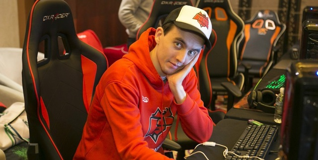
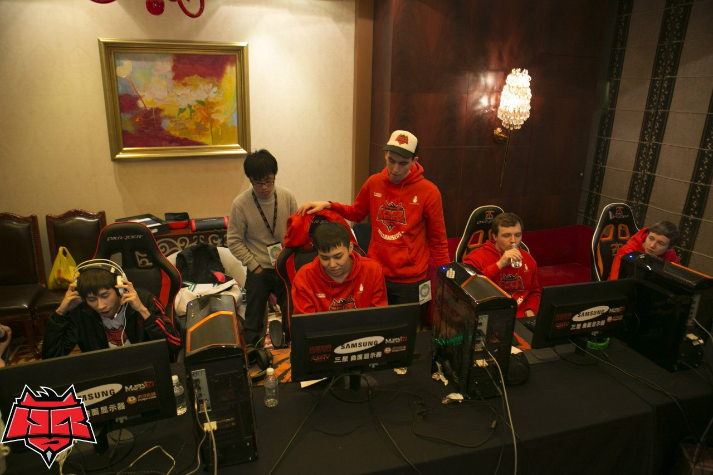
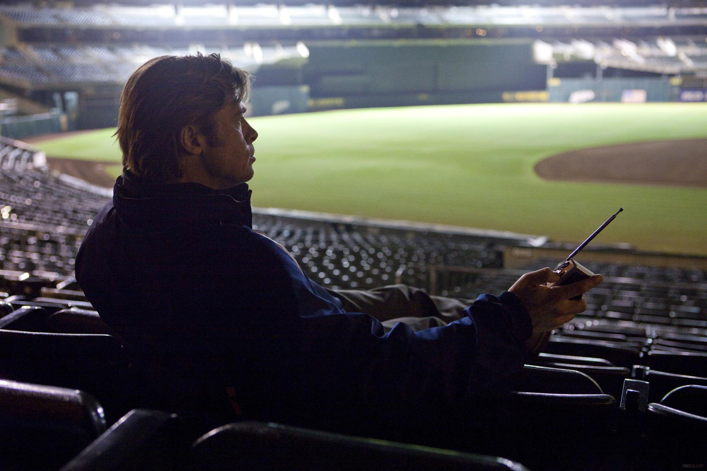

Всплыть по рубку: valentiNich о команде и важных решениях
Менеджер Dota2-состава пролил свет на текущее положение дел в коллективе и рассказал о последних событиях вокруг него.

Привет всем читателям HellRaisers.pro! Революционные речи будут позже, а пока расскажу о делах насущных. Тем более, что момент располагает.
За последние недели на нас вылилось немало «ушатов добра», но это — уже позади, поэтому сейчас можно спокойно поделиться «командным инсайдом», без опасения быть обвиненным в попытках оправдываться.
Смеркалось. Вечер пятницы, 20 марта. Центральное интернет-телевидение транслирует матч SFZ против Cloud9, сразу после окончания которого должна состояться игра между HellRaisers и Vega. Однако схватка АртСтайла и ЭтерналЭнви перерастает в пятичасовое побоище, а к 190-й минуте второй карты визуально локация напоминала городскую площадь города-миллионника после ночного рок-концерта. Рапиры, гемы, телепорты, персональные курьеры для каждого из игроков, несколько комплектов «одежды» в «стэше» и тому подобное. Для завершенности образа не хватало лишь купающихся в фонтане десантников и выпускников школ, сопящих алкогольными парами где-то неподалеку.
Всё это время мы терпеливо ждали своего часа и готовились к матчу, не желая переносить его на какой-либо другой день, тем самым еще больше усложняя себе турнирное расписание. Даже несмотря на то, что для нескольких игроков нашей команды шел 5-й час утра.
И тем не менее, мы пошли навстречу команде Vega, организаторам и комментаторам.
Все последующие детали можно было бы опустить и не обсуждать, но. Раз обозначил в эпиграфе некий «инсайд», просто расскажу, как мы играли этот матч. Никаких эмоций, просто голые факты. Допускаю, что заработанное преимущество не гарантировало нам победу, поэтому говорить о стопроцентной победе нельзя, но тем не менее.
Первая карта — задел по золоту и опыту около 15 000. DDoS, Артес выбегает на улицу и мчится к товарищу в соседний дом, а его персонажа по очереди контролируют Годдэм и Дрэд. Следом льготное право на слайд-шоу достается Афонину. Но если Артем успел перезайти в игру, то Андрей так и не вернулся, поскольку бежать было некуда — местный питерский провайдер не справился с наплывом запросов и с горя ушел в глубокий транс, а больше интернет в округе никто и не раздает. В итоге бережливый Storm Spirit так и не купил какие-либо вещи и на догорающий трон смотрел с шестью тысячами золота в карманах.
Вторая карта — преимущество 10 тысяч перерастает в капитуляцию SFZ на 20-й минуте. DDoS'а нет.
Третья карта — графики по золоту и опыту за нами, запас в районе 10 000. Что бы вы думали? «Здравствуйте, я вашя тётя». На этот раз под раздачу попадает Горец. Пауза, скоростное отключение девайсов, такси, побег в компьютерный клуб, где, чего уж скрывать, «тазики» пару лет назад безвозвратно устарели как морально, так и физически. Остальные игроки, тем временем, путем интриг и ухищрений вели партизанскую войну по удержанию паузы. Казалось, что с горем пополам нам удастся доиграть этот матч, но вновь был атакован наш «центровой» — Афонин. На этот раз он остался в игре, однако единственное, что он мог, так это с грустью смотреть на отрывистые статичные картинки в экране монитора. Миссией Андрея на оставшиеся минуты стала попытка «прокликать» необходимые вещи и дождаться, пока тиммейт подведёт его персонажа к магазину для покупки.

После 15 минут игры в таком увлекательном формате, более походившем на форменное цирковое представление, мы сдались. Причём еще до потери первого барака, чего за полгода с нами не происходило ни разу.
Сразу после — крайне эмоциональное обсуждение внутри коллектива, а стоит ли в подобном состоянии вообще играть матч против Cloud9, который должен начаться через несколько минут? Я настаивал на том, что пока есть турнирные шансы — нужно бороться. Но, объективно говоря, все были настолько подавлены этим трехдневным стрессом, что об оптимальном качестве игры не могло быть и речи.
Психологическое состояние и умение концентрироваться играет огромную роль в спорте. Вспомните хотя бы финал чемпионата мира по футболу 1998 года между сборными Франции и Бразилии. На протяжении всего мундиаля молодой «зубастик» Ронадло демонстрировал феноменальную игру и был главной надеждой и опорой своей команды, но конкретно в финальном матче он «пропал». Физически на поле вроде бы и присутствовал, но от былого футбольного зверя не осталось и следа — в глазах была лишь гнетущая пустота. По одной из версий, причиной подобной перемены стал невроз, вызванный сложностями в отношениях Роналдо с его девушкой. Во как. Будьте бдительны, товарищи!
Выводы:
- Защищайтесь. Смените пароль от вашего аккаунта Вконтакте, завершите сеансы на всех используемых устройствах.
- Используете Skype? Делайте это по феншую. Ссылки в помощь: http://imgur.com/a/NpFdW (бесплатно, не максимально надежно – прокси периодически умирают) & http://instant-skype-proxy.com.
- Не позволяйте обстоятельствам выбивать вас из колеи. Ограждайте себя и своих коллег/друзей/подчиненных от ненужной информации, будьте на «своей волне», игнорируйте внешний мир.
Не буду особо останавливаться на теме букмекеров, поскольку прекрасно понимаю, что спасение утопающих — дело рук самих утопающих. Истина, которая, впрочем, от повторения не тускнеет. Если допустил брешь в обороне — виноват в первую очередь ты сам. С интернет-гиенами, зарабатывающими на ставках с помощью DDoS-атак и хозяевам букмекерских контор, сосредоточенных на пересчете долларовых купюр, всё ясно. Одни кровно заинтересованы в консервации текущего положения вещей, другим до рядового, как им кажется, эпизода нет никакого дела. Но продолжение матча в меньшинстве, которое в 95% случаев гарантирует поражение, разве это то, что нужно организаторам турниров и болельщикам, настроенных на зрелища?
Собственно, спустя несколько дней мы на личном примере показали, какие видим варианты решения данной проблемы. Конечно, это не панацея, но именно по нашей инициативе организаторы несколько раз переносили матчи, в которых соперник оказывался в меньшинстве из-за DDoS-атак, а у нас в руках была по сути бесплатная, но «дурнопахнущая» победа.
Да, для нас имеют значение подобные вещи, в этом нет позерства. Как говорил герой Бреда Питта в к/ф «Moneyball»: «Трудно не быть романтиком в бейсболе».

Мы выбыли из борьбы сразу в нескольких ключевых турнирах. Это огромная пощечина по амбициям команды и ожиданиям болельщиков. Пусть время на секунду остановится. Нужно переосмыслить произошедшее, сделать выводы и начать подготовку к апреле-майскому спринту. Именно в этот период все без исключения команды будут стремиться выйти на пик своей формы, чтобы либо засветиться и получить прямое приглашение на The International, либо быть готовым к отборочным к нему на 100%. А пока на носу – квалификации на DreamHack Summer и RedBull, а также турниры DotaPit, D2CL.
А противоречия есть в любом коллективе. Порой атмосфера дружбы накаляется до такой отметки, что без вывода пара «котёл» просто разнесёт. У всех свои характеры, особенно ярко сияющие у людей молодых и амбициозных. Не скрою, у нас появились определенные «тёрки». Я, поскольку практически всегда нахожусь вместе с игроками (как на официальных матчах, так и во время тренировок), ощущал тихое ползучее недовольство и моральную усталость.
Идеальным выходом из сложившейся ситуации был бы двухнедельный перерыв. Это время было нужно, чтобы игроки остыли и соскучились друг по другу. Но такой роскоши мы себе позволить не могли. Именно поэтому на некоторых турнирах нам приходилось играть с заменами.
Выводы, которыми можете воспользоваться и вы, такие:
- Признавайте права и мнения друг друга.
- Не таите неприязни и будьте честными.
- Выясните отношение второй стороны к какому-либо вопросу и постарайтесь понять противоположную точку зрения.
- Четко определите предмет спора и/или конфликта
- Активно ищите общее решение. Компромиссы — лучше ультиматумов.
- Найдя выход из ситуации, неуклонно выполняйте принятое решение.
- Умейте разрядить обстановку вежливостью и юмором
К слову, остановиться на минуту и допустить мысль «А что если я абсолютно не прав?» куда сложнее, чем плыть по течению с грузом старых привычек, боясь взглянуть на них по-новому. Взглянуть и понять, а нужны ли эти привычки вам или их пора безжалостно выбросить за борт?
Отличный подход — быть готовым поменять любое свое мнение на 180 градусов, если вам предъявят факты, свидетельствующие о неверности вашей точки зрения. Это и есть эволюция, которая, как известно, куда лучше революции. Именно последовательный прогресс — та цель, которую преследуем мы.
Отсюда проистекает желание сохранить состав и работать «в долгую», а не устраивать кадровую чехарду, будто испытывая маниакальное удовольствие от поиска недостатков в людях и последующего профессионального определения виновных во всех неудачах.
Конечно, роскошь стабильного состава можно себе позволить только при одном условии — если у каждого из игроков горят глаза и они готов «грызть землю» изо дня в день, шаг за шагом, чтобы приблизиться к своей мечте. Хочу видеть это у моих ребят в ближайшие месяцы.
На этом всё, спасибо за внимание и, самое главное, поддержку команды. Задавайте вопросы, отвечу в комментариях к этой записи.

Валентин
«valentiNich» Кравченко
менеджер HR.Dota2
8441
Тег:
Hellraisers DOTA2


Комментарии (8)